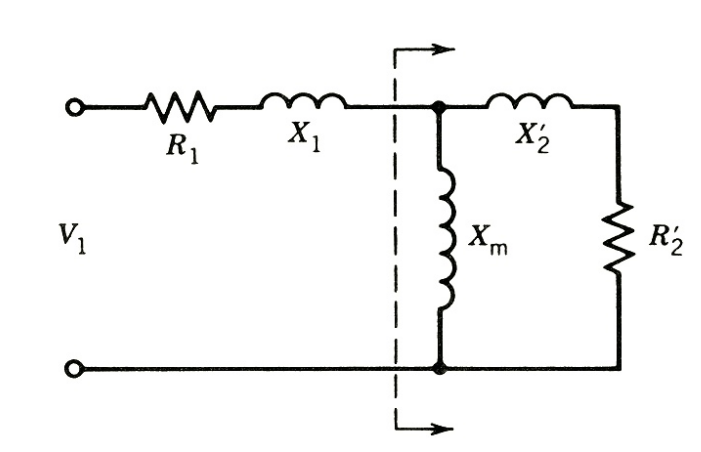
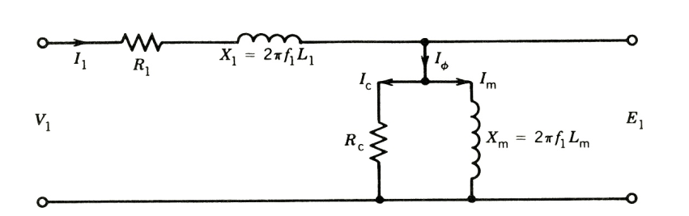
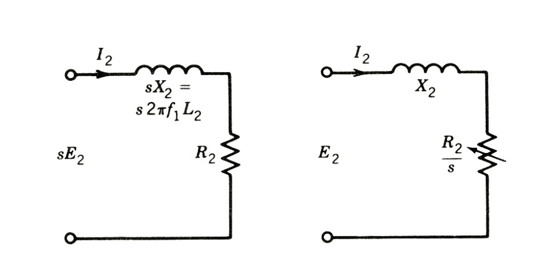
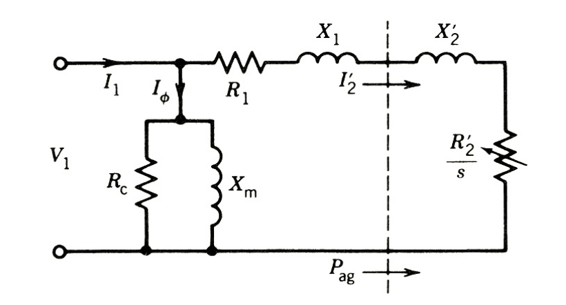

class: center, middle # EE-362 ELECTROMECHANICAL ENERGY CONVERSION-II # Equivalent Circuit of Induction Machines ## Ozan Keysan [keysan.me](http://keysan.me) Office: C-113 <span class="meta">•</span> Tel: 210 7586 <!-- # Speed of Rotor MMF ## wrt stationary frame ### Speed of rotor currents + Speed of Rotor ### \\(s n_s\\) \\(+ n_r\\) \\(= s n_s + (1-s) n_s\\) \\(= n_s\\) ### Rotor MMF rotates at synchronous speed as seen from the stationary frame. --> --- ## Assume the rotor is stationary (s=1): ## Then the frequency of rotor currents: \\(f_r =\\) -- \\(f_s\\) -- ## Machine just behaves just like a transformer (secondary short-circuited) - ### Stator winding: Primary winding of the transformer - ### Rotor bars: Secondary winding of the transformer --- # Equivalent Circuit, Rotor Stationary (s=1) ### Same as a transformer with secondary side short-circuited  --- ## Assume now the rotor starts rotating (with \\(N_r\\)) -- - ## Rotor induced voltage reduces (as the frequency difference between rotor and stator reduces) -- - ## Therefore current reduces, -- - ## but not that much, because the rotor side impedance reduces with reduced rotor current frequency (jwL) --- ## Stator Side Equivalent Circuit  --- ## Rotor Side Equivalent Circuit  ### Rotor side impedances can be modified to transfer these to the stator side For curious students: P.C.Sen, Principles of Electrical Machines and Power Electronics, Section 5.7, Derivation of the equivalent circuit of induction machines --- # Equivalent Circuit with Referred Rotor  --- ## Determination of Equivalent Circuit Parameters -- ## What was the two tests used for transformers? -- - # Open-circuit Test - # Short-circuit test --- ## Determination of Equivalent Circuit Parameters ## Equivalent tests for induction machines: - # Open-circuit Test = No-Load Test - # Short-circuit test = Locked Rotor Test --- # Locked-Rotor Test ### Rotor kept stationary with a mechanical locking system ## \\(n_r = 0 \rightarrow s = 1\\) -- ### Apply a small voltage (10-15% of the rated) to obtain rated current and measure: - ### Input Power - ### Input Voltage - ### Current --- # Locked-Rotor Test ### Neglect the parallel branch and s = 1, the circuit becomes: <img src="./images/ee362/locked_rotor_equivalent.png" alt="Drawing" style="width: 700px;"/> --- # Locked-Rotor Test - ### \\(P\_{phase} = \dfrac{P\_{total}}{3} = I_1^2 (r_1 +r'_2) \\) - ### Measure \\(r\_{1(dc)}\\) using an ohm-meter, assume \\(r\_{1(ac)}=1.1r\_{1(dc)}\\) - ### \\(\dfrac{V\_1}{I\_1} = Z\_{eq}= \sqrt{(r_1 +r'_2)^2+(X_1 +X'_2)^2}\\) - ### Assume \\( X\_{1} = X'\_{2}\\) --- # No-Load Test ## Run the motor at no-load, applying rated voltage ## \\(n_r \simeq n_s \rightarrow s \simeq\\) -- \\(0\\) -- ### Again measure: - ### Input Power - ### Input Voltage - ### Current --- # No-Load Test ### Rotor-side is open-circuited (s=0), the series branch (R1,X1) can also be neglected: --- # No-Load Test - ### \\(P\_{phase} = \dfrac{P\_{total}}{3} = \dfrac{V_1^2}{R_c} \\), find \\(R_c \\) - ### \\(\dfrac{V\_1}{I\_1} = Z\_{eq}= R_c // X_m \\), find \\(X_m \\) -- ## But, how about mechanical friction and windage losses? -- ### Get a few measurements at different voltages and speeds to estimate the friction. --- # Example: ### Estimate the parameters of a 30 kW, 50 Hz, Delta-connected, 415 V, 3-phase machine, if the test results are as follows: -- ### Locked-Rotor Test: - ### Input Power: 6.4 kW - ### Line Current: 77 A - ### Line Voltage: 130 V - ### Resistance between two lines: 0.293 \\(\Omega\\) --- # Example: ### Estimate the parameters of a 30 kW, 50 Hz, Delta-connected, 415 V, 3-phase machine, if the test results are as follows: -- ### No-Load Test: - ### Input Power: 1.65 kW - ### Line Current: 22.8 A - ### Line Voltage: 415 V - ### Friction and windage losses: 1.15 kW #### Assume \\(X_1=X_2'\\) --- ## You can download this presentation from: [keysan.me/ee362](http://keysan.me/ee362)